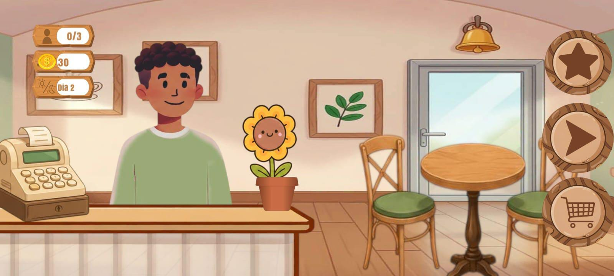

Decore o café, descanse a mente
Prepare Café é um jogo tranquilo de gerenciar uma humilde cafeteria,
sem cronômetro apertando você, nem objetivos viciantes
só o simples e agradavél jogo de juntar moedas
Prepare Café é um jogo tranquilo de gerenciar uma humilde cafeteria,
sem cronômetro apertando você, nem objetivos viciantes
só o simples e agradavél jogo de juntar moedas
